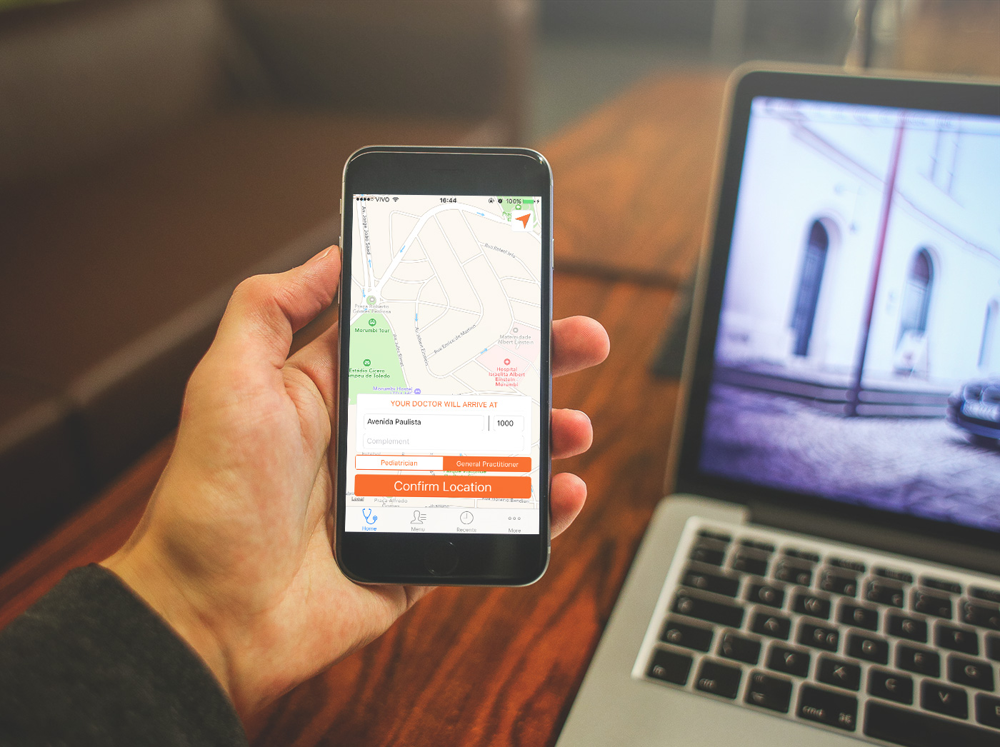

GoDoctor
Um dos projetos da TapDoc busca conectar pacientes e médicos em um sistema que oferece assistência médica domiciliar sob demanda, e assim nasceu o GoDoctor. Nossa equipe de desenvolvimento na TapDoc implementou os aplicativos para pacientes e médicos para Android e iOS.